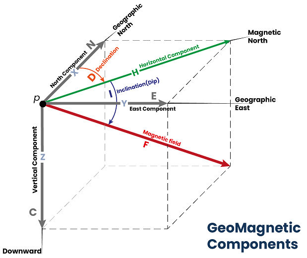

Background
☝ Before moving on with MagGeo you might want to take a look at the following concepts:
Earth’s Magnetic Field
 The Earth’s magnetic field (or geomagnetic field ) is generated in the fluid outer core by a self-exciting dynamo process. Electrical currents flowing in the slowly moving molten iron generate the magnetic field. In addition to sources in the Earth’s core the magnetic field observable at the Earth’s surface has sources in the crust and in the ionosphere and magnetosphere.
The Earth’s magnetic field is described by seven components. These are Declination (D), Inclination (I), Horizontal intensity (H), Vertical intensity (Z), total intensity (F) and the north (X) and east (Y) components of the horizontal intensity. In most of the geomagnetic data sources the reference frame used to share the magnetic components is NEC, which is basically the same XYZ cartesian system. By convention, declination is considered positive when measured east of north, Inclination and vertical intensity positive down, X (N) positive north, and Y(E) positive east. The magnetic field observed on Earth is constantly changing.
The Earth’s magnetic field varies both in space and time That is why the relevance of MagGeo helping researchers to understand the variations of the geomagnetic field across an animal movement trajectory. In particular having the annotated geomagnetic components at the the date and time the GPS point was collected. The following image can help you to understand how the geomagnetic components are represented and how they are computed.
Considering the point of measurement (p) as the origin of a Cartesian system of reference, the x-axis is in the geographic meridian directed to the north, y-axis in the geographic parallel directed to the east and z-axis parallel to the vertical at the point and positive downwards. Then we have:
The unit of magnetic field intensity, strictly flux density, most commonly used in geomagnetism is the Tesla. At the Earth’s surface the total intensity varies from 22,000 nanotesla (nT) to 67,000 nT. The units of D and I are degrees.